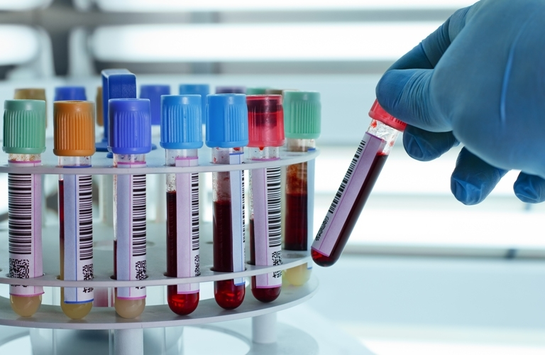

Quy trình xét nghiệm là thủ tục từ khi lấy mẫu máu theo chỉ định của bác sĩ sau khi thăm khám, tiến hành các xét nghiệm cho đến khi nhận được kết quả.Quy trình xét nghiệm gồm 3 giai đoạn chính: Trước xét nghiệm, thực hiện xét nghiệm và sau khi xét nghiệm.
Để đảm bảo mức độ chính xác và tin cậy của xét nghiệm phục vụ cho quá trình chẩn đoán cũng như điều trị hiệu quả cho bệnh nhân, toàn bộ quá trình xét nghiệm được thực hiện theo đúng quy trình bởi đội ngũ bác sĩ có tay nghề cao, chuyên môn giỏi.
Giai đoạn này bao gồm các chỉ định xét nghiệm, gửi chỉ định đến phòng xét nghiệm, bác sĩ lấy mẫu bệnh phẩm, vận chuyển mẫu bệnh phẩm đến khu vực xét nghiệm, nhận và bàn giao mẫu, xử lý mẫu ban đầu...Để tránh ảnh hưởng đến kết quả xét nghiệm, bệnh nhân chú ý nên nhịn ăn sáng. Bên cạnh đó, người bệnh nên mang theo bảo hiểm y tế, bút bi, nước lọc cũng đồ ăn sáng để tránh tình trạng đói lả sau khi thực hiện xong các xét nghiệm.
Các mẫu bệnh phẩm sau khi lấy từ bệnh nhân được đưa vào hệ thống máy phân tích, quá trình xét nghiệm được thực hiện tự động nên đảm bảo mức độ chính xác cao.
Sau khi các xét nghiệm được tiến hành xong, kết quả được đội ngũ kỹ thuật viên kinh nghiệm lâu năm đánh giá, kiểm duyệt kết quả và gửi đến tay bác sĩ để từ đó chẩn đoán, sàng lọc các dấu hiệu bệnh lý.
Để rút ngắn thời gian chờ đợi cho bệnh nhân, Viện huyết học – Truyền máu trung ương hiện đang áp dụng quy trình khám và điều trị bệnh cải tiến với tổng thời gian trung bình từ khi nhận số thứ tự vào phòng khám, lấy máu xét nghiệm đến khi nhận kết quả, được tư vấn, kê đơn thuốc chỉ còn 2,5 giờ/bệnh nhân. Đặc biệt, tất cả các khâu này đều được thực hiện nhanh chóng ngay tại phòng khám.
Là một trong những tuyến bệnh viện công lập khám và điều trị bệnh về máu hàng đầu trong cả nước, chi phí xét nghiệm tại Viện rất hợp lý và phù hợp với nhiều đối tượng khác nhau. Trong đó:
Dịch vụ Xác định nhóm máu: 18.000 – 500.000 đồng
Nghiệm pháp Coombs: 18.000 – 500.000 đồng.
Dịch vụ Định danh kháng thể bất thường: 1.100.000 đồng
Dịch vụ xác định bản chất kháng thể đặc hiệu: 400.000 đồng
Dịch vụ xét nghiệm hiệu giá kháng thể: 35.000 – 350.000 đồng
Sự chủ động trước, trong và sau quá trình khám và điều trị bệnh là yếu tố giúp mỗi chúng ta tiết kiệm thời gian, chi phí và vơi bớt mệt mỏi.